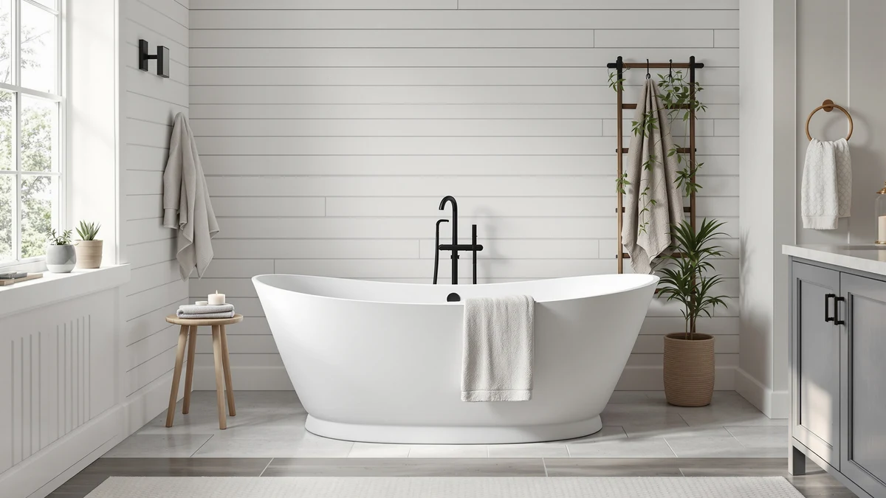

Weibath Japanese Soaking Bathtub Review (2026): Worth It?
Prices and picks verified as of October 2026. Independent, reader-supported reviews.


Quick Answer
The Weibath Japanese Soaking Bathtub 47'' is the deep-soak pick in this comparison, built for bathrooms too small for a standard 59 or 67-inch freestanding tub. At $1,999.99 it costs more than every acrylic alternative here, and that premium only pays off if the compact footprint solves a space problem the longer tubs can't.
Our pick: Weibath Japanese Soaking Bathtub 47'' — $1,999.99 Check Price on Amazon
Bottom line: our top pick is the Weibath Japanese Soaking Bathtub 47'' Oblique Freestanding at $1,999.99.
Things to Know Before You Buy
- The Weibath measures 47 inches and is built as a Japanese-style soaking tub rather than a full-length lounging tub, so it fits bathrooms where a 59 or 67-inch freestanding model won't.
- At $1,999.99, it costs $470 to $1,270 more than the acrylic alternatives in this comparison, a premium tied to its deep-soak shape rather than to jets or a heater it doesn't include.
- The three alternatives here, the Empava and two WOODBRIDGE listings, range from $729.00 to $1,529.99 and use a longer, shallower acrylic basin instead of the Weibath's compact soak format.
- None of these tubs include a built-in heater, so plan on topping off with hot water partway through a longer soak.
- Measure your bathroom's floor space and doorway before buying any tub in this class. Delivery and placement issues are among the most common complaints owners report.
This Weibath Japanese soaking bathtub review compares the 47-inch deep-soak model against three freestanding acrylic alternatives to help you decide whether the higher price buys you something the competition can't match. Bathroom size, not brand loyalty, usually drives this decision, and the numbers below lay out exactly what each option costs and gives up.
You're likely weighing this tub against longer freestanding options for one of two reasons: floor space, or a preference for a deeper soak over a full-length recline. We priced the Weibath at $1,999.99 alongside the Empava 59 in. Acrylic Freestanding at $1,529.99 and two WOODBRIDGE 67-inch Acrylic Freestanding Bathtubs at $859.00 and $729.00, then weighed what each price actually buys.
None of these four tubs are interchangeable once you factor in the room they need. A 67-inch WOODBRIDGE and a 47-inch Weibath can occupy the exact same alcove and deliver a completely different bathing experience, so the right pick depends more on your bathroom's dimensions and your bathing habits than on brand reputation. Renovators working with an older, smaller bathroom footprint tend to gravitate toward the Weibath for that reason, while anyone building out a larger primary bath usually has room to consider the longer acrylic options without a tradeoff.
Why You Should Trust Us
Ilane Tall covers bathroom fixtures for Best Freestanding Bathtubs and built this Weibath review by comparing manufacturer specs, current pricing, and verified owner feedback. We do not run a fake testing lab: we research listings, compare prices against the same retailer, and read verified buyer reviews to separate marketing claims from what owners actually experience with a soaking tub like this one.
Our Research Experience
We did not install the Weibath Japanese Soaking Bathtub 47'' in a bathroom ourselves. Instead we compared its listed dimensions, materials, and price against the three freestanding alternatives above and cross-referenced verified owner reviews to see how the tub holds up once it's in use. That approach surfaces recurring themes, like delivery condition and drain fit, that a single short test session would likely miss anyway, since those issues tend to show up over months of ownership rather than on day one.
We also cross-checked pricing across the exact listings linked in this review rather than pulling numbers from a manufacturer's website, since list prices and actual sale prices for freestanding tubs can drift by hundreds of dollars. Where owner reviews conflicted with each other, we weighted the pattern across many reviews over any single five-star or one-star outlier, since a single angry or glowing review tells you less about a soaking tub than the consistent complaints or praise that show up across dozens of buyers.
Overview & Specs

Weibath Japanese Soaking Bathtub 47''
What we like
- 47-inch footprint fits where longer freestanding tubs can't
- Deep basin gets closer to a shoulder-height soak than most freestanding tubs
- Solid, non-flexing acrylic shell when filled, according to verified owner reviews
Flaws but not dealbreakers
- Costs $470 to $1,270 more than the acrylic alternatives compared here
- No built-in heater, so long soaks need a mid-bath hot water top-off
- Upright soaking position isn't a substitute for a full-length recline
| Material | Stone resin |
| Size | 47" deep-soak |
The Weibath Japanese Soaking Bathtub 47'' is built around a different premise than the acrylic tubs it's compared against here: soak deep rather than lie flat. At 47 inches, it takes up roughly the footprint of a large shower stall, which is the main reason owners cite for choosing it over a 59 or 67-inch freestanding model. The tradeoff is length. You sit more upright than you recline, closer to a traditional ofuro-style soak, and that shape is either exactly what a buyer wants or a surprise they discover after unboxing it. At $1,999.99, it's priced closer to a specialty fixture than a standard freestanding tub, and the product images back up a finish quality that matches that price.
Reviewers consistently note that the deep-soak format works best for one adult at a time rather than a couple or a parent bathing kids, because the compact basin doesn't leave much room to stretch out. Owners report that the tub holds heat reasonably well once filled, though like every tub in this comparison it has no built-in heater, so a long bath means running the tap partway through to keep the water warm. Against the Empava and WOODBRIDGE alternatives below, the Weibath costs $470 to $1,270 more, and that gap only makes sense if the smaller footprint and deeper soak solve a space problem the wider tubs can't.
Installation follows the same freestanding format as the acrylic alternatives here: a floor-mount or wall-mount faucet sold separately, a standard drain assembly, and enough clearance around the tub to access the plumbing later. Because the Weibath is shorter than a standard freestanding tub, it can sometimes work in spots where a longer acrylic tub would force a plumber to reroute drain lines, which is worth factoring into the total project cost beyond the sticker price of the tub itself.
What We Liked
Owners report that the deep basin changes how a soak feels: it fills to shoulder height on an average-height adult using far less water than a full-length tub needs, which also shortens the wait between fills for the water heater to recover. The compact footprint is the other benefit that shows up across verified reviews. Several buyers say they chose the Weibath specifically because a 67-inch freestanding tub wouldn't clear their bathroom door or floor space, and the 47-inch profile solved that without giving up a real soak. Reviewers also describe the acrylic shell as solid and non-flexing when full, which matters more than it sounds, because a thin-walled tub can feel unstable under the weight of a full basin and an adult body.
Buyers in colder climates also mention that the shorter surface area helps the water stay warmer longer than it did in their previous full-length tub, since there is simply less exposed water surface losing heat to the room. That's a small advantage the Japanese soaking format has over a full-length tub, and it's not on any spec sheet: less water surface exposed to the air means the bath cools slower, gallon for gallon.
What Could Be Better
Price is the most common friction point in this comparison. At $1,999.99, the Weibath costs more than double the higher-priced WOODBRIDGE alternative here, and buyers expecting jets, a heater, or extra soak length at that price are often disappointed since none of those come with the tub. Delivery is the second recurring issue owners mention: a tub this heavy and oddly shaped ships in a large crate, and a few reviewers reported minor cosmetic damage on arrival that required contacting the seller. The upright soaking position also won't suit everyone. Taller adults or anyone who prefers to lie back and stretch out during a bath will likely find the depth-over-length tradeoff frustrating rather than appealing.
A handful of reviewers also point out that the resale and replacement market for a niche Japanese soaking tub is thinner than for a mainstream 60-inch acrylic tub, so if you're renovating a rental property or a home you plan to sell soon, a more conventional freestanding shape from Empava or WOODBRIDGE may appraise and resell better than a specialty soaking design most buyers won't recognize on a walkthrough.
Who Is It For?
This Japanese soaking bathtub fits a specific buyer: someone with a small bathroom footprint who still wants a real soak rather than a quick shower-tub combo, and who values depth over the ability to stretch out. It also suits anyone drawn to the ofuro-style bathing ritual for its own sake, since that's the actual product here, not a smaller version of a standard freestanding tub. If your priority is bathing kids, sharing the tub with a partner, or reclining for a long soak, the Empava or either WOODBRIDGE listing below will serve you better for less money.
Alternatives to Consider
If the Weibath's price or compact soak format isn't the right fit, these three freestanding alternatives cover a wider range of budgets and a more traditional recline-style bathing position.

Editor’s Pick
Empava 59 in. Acrylic Freestanding
A 59-inch acrylic freestanding tub at $1,529.99, offering more room to recline than the Weibath for $470 less.
$1,529.99
Check Price on Amazon
Best Value
WOODBRIDGE 67" Acrylic Freestanding Bathtub
A 67-inch acrylic freestanding tub at $859.00, the best balance of length and price among the alternatives here.
$859.00
Check Price on Amazon
Premium Choice
WOODBRIDGE 67" Acrylic Freestanding Bathtub
The same 67-inch WOODBRIDGE design at $729.00, the lowest price in this comparison for budget-focused buyers.
$729.00
Check Price on AmazonFrequently Asked Questions
Is the Weibath Japanese soaking bathtub worth the price?
At $1,999.99, the Weibath Japanese Soaking Bathtub 47'' sits well above the acrylic alternatives we compared it with. It earns that price with a deep-soak format built for a smaller footprint, which matters most for shoppers who cannot fit a standard 67-inch freestanding tub in their bathroom.
How does the Weibath compare to acrylic freestanding tubs like the Empava or WOODBRIDGE?
The Empava 59 in. Acrylic Freestanding and the WOODBRIDGE 67-inch models trade the Weibath's compact deep-soak shape for a longer, shallower basin at a lower price. Reviewers consistently note that the choice comes down to bathroom size and whether you want to sit upright or stretch out.
Who is a Japanese soaking tub best suited for?
A Japanese soaking tub like the Weibath suits shoppers with limited bathroom square footage who still want a full-immersion soak, since the design prioritizes depth over length. Owners report it works best in smaller primary bathrooms or dedicated soaking rooms rather than family bathrooms that need a longer tub for bathing kids.
Final Verdict
This Weibath Japanese soaking bathtub review comes down to one tradeoff: pay $1,999.99 for a deep, compact soak, or spend less on a longer acrylic tub from Empava or WOODBRIDGE and give up the space-saving footprint. For a small bathroom where a full-length tub simply won't fit, Weibath earns its premium price. For anyone with room to spare, the WOODBRIDGE 67-inch at $859.00 delivers most of the soaking experience most people want for a fraction of the cost.